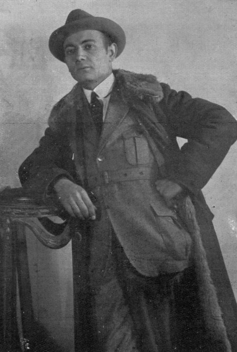

Franjo Ledić (12. ožujka 1892. – 26. rujna 1981.) bio je hrvatski filmski redatelj, scenarist, publicist i avanturist. Rođen je u Derventi, a preminuo u Zagrebu. Bio je jedan od pionira hrvatske kinematografije.
Tijekom svoje karijere bavio se filmskom produkcijom i režijom. Osnovao je filmsku tvrtku Ocean film, kasnije nazvanu Jadran film. Godine 1925. otvorio je filmski studio u Zagrebu, želeći razviti domaću filmsku industriju po uzoru na Hollywood.
